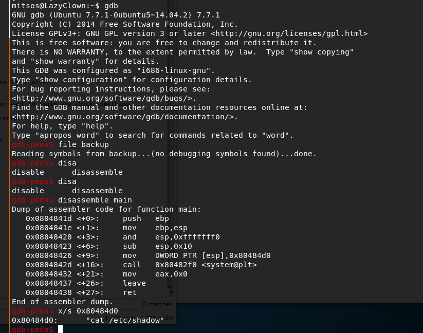

扫描端口信息：
访问80端口web页面如下：
发现存在一个注册页面，一个登录页面
简单尝试登录页面是否存在admin相关弱口令，没有发现
进入注册页面注册用户后登录:
登录后发现并没有什么可利用信息
另一方面，在尝试注册admin用户时，提示用户已存在：
可能存在sql注入，尝试无果
尝试利用burpsuite捕获登录过程的数据包：
第二个数据包包含一个auth的cookie，对其进行修改后的请求响应如下：
提示出现invalid padding，网上搜集资料，其可能潜在padding oracle attack，关于该攻击的详情此处不再展开，可自行谷歌
利用kali自带的padbuster，来尝试获取auth cookie所包含的信息
如图所示，解密处其所代表的明文信息为user=mo7
因此，进一步利用该工具来获取user=admin的auth cookie信息
而后，利用修改cookie为auth=BAitGdYuupMjA3gl1aFoOwAAAAAAAAAA来登录到管理员页面
管理员页面存在一ssh key的超链接：
利用该rsa private key成功登录到mitsos(rsa key 链接提示)用户：
获取到user flag
查看目录下的backup文件：

为一设置有suid标志的elf文件，该文件似乎是读取了/etc/shadow文件
由于目录下还有peda文件，直接尝试gdb调试

main函数执行了system("cat /etc/shadow")
因此，可尝试自行构造cat文件，读取root.txt文件